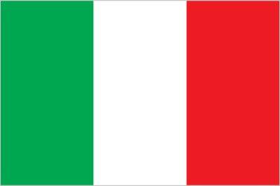
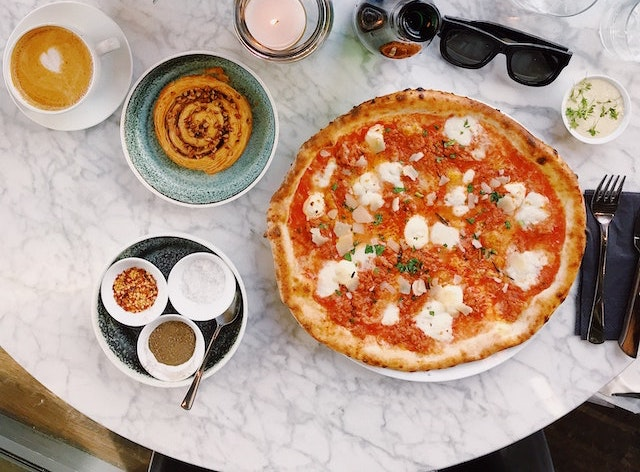

Italy
My Italy visits always show me that there are unlimited alternatives a cook can produce a pizza and pasta. The delicious combinations of these two meals could impress everyone. Toppings and pizza bread alternatives could create wonderful scenes and they are enriched with attractive smells obviously for centuries. Of course, the most famous Italian dessert tiramisu and its creamy form should be tasted with a cup of espresso in the afternoons.

Italy Flag (Image from CIA World Factbook)

Pizza Menu (Image from Pexels)